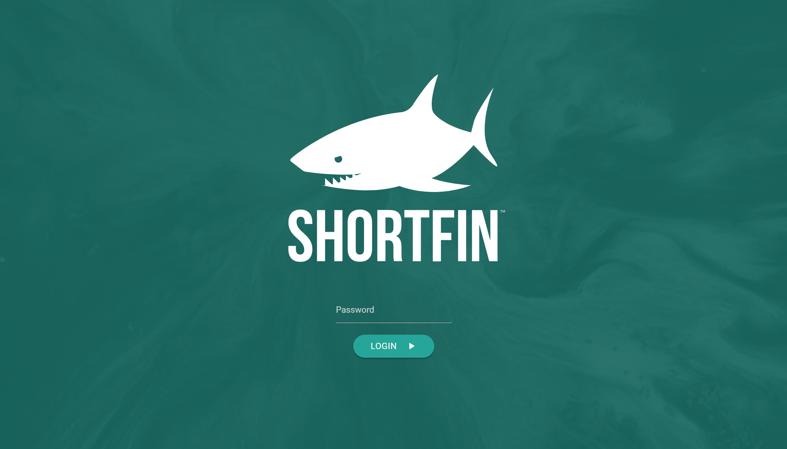

Shortfin
Shortfin is a search tool developed for a client to aid in finding land titles. The project involved a large dataset which needed to undergo OCR. This was completed through parallelization in AWS. The interface also utilizes artificial intelligence to make inferences about related documents. Since the dataset is so large, lazy loading is used to make the interface snappy while providing all the data a user needs.
- 
-

COLLABORATORS
- Blake Williford
MY CONTRIBUTIONS
- Project Manager
- NodeJS API
- MongoDB
- AWS Management
- OCR
- BigData Handling